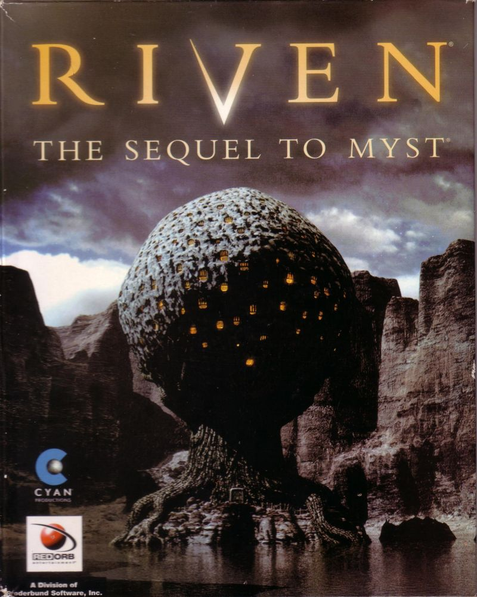

DivQ1 What is the value of 3 / 2? ----- 1: DivQ2 1.5: DivQ4 *: DivQ3DivQ2 The / operator produces floats. What is the value of 9 / 3? ----- 3: DivQ2 3.0: DivQ4 *: DivQ3DivQ3 What is the value of 5 / 4? ----- 1.25: DivQ4 *: DivQ2DivQ4 What is the value of 9 // 4? ----- 2: EXIT *: DivQ1
Coding is an Adventure
Jed Rembold
November 18, 2024
Announcements
- Exam 2 scores posted and feedback visible
- Enigma Project due tonight!
- My day is busier than usual because of advising and other meetings, but I still have my office hour after class
- Project 5 guide will go out later tonight
- Can work on it with a partner (from this class or your section) if you want, but not required
- Email me if you’d like a partner but don’t currently have one; I’ll try to connect people
- Due the last Wednesday of classes (approx 2 weeks)
- Polling: polling.jedrembold.prof
Exam 2 Debrief
- Descriptive Statistics (before extra points)
- High: 102%
- Mean: 83%
- Median: 86%
- My take-aways:
- Writing a bit more documentation might help some of you organize your thoughts
- Need to practice identifying which parts of past code are useful, and which parts do not apply
- 2D arrays are still a bit overwhelming
- Swing by my office to chat if you’d like me to go through any problems in depth with you. I am happy to do so and lay out my thoughts along the way.
Academic Honesty
- Over the course of Exam 1 and Exam 2 in here, there have been very few, but a non-zero amount, of submissions that raise red flags
- We are a small school, and one wherein I try hard to foster relationships between myself and students
- If you are cheating or attempting to cheat in one of my classes, I
rationally know that it isn’t personal
- But it feels real personal, because I was trying to hold a door open for you to encourage a relationship
- It is also massively disrespectful to every one of your classmates, both for equality and because the consequences of your actions might adversely affect them
- I want the final to be mostly the same format. But there might be some slight changes. I’ll keep you posted.
Back to the Teaching Machine
An Internal Representation
Data file to Internal Rep
The TeachingMachine Program
from TMCourse import read_course
def teaching_machine():
course = choose_course()
course.run()
def choose_course():
"""
Returns a course chosen by the user.
"""
while True:
try:
filename = input("Enter course name: ")
with open(filename + ".txt") as f:
return read_course(f)
except IOError:
print("Please enter a valid course name.")
# Startup code
if __name__ == "__main__":
teaching_machine()The TMCourse Class
from TMQuestion import TMQuestion, read_question
class TMCourse:
def __init__(self, questions):
"""Creates a new TMCourse object with the specified questions."""
self._questions = questions
def get_question(self, name):
"""Returns the question with the specified name."""
return self._questions[name]
def run(self):
"""Steps through the questions in this course."""
current = "START"
while current != "EXIT":
question = self.get_question(current)
for line in question.get_text():
print(line)
answer = input("> ").strip().upper()
next = question.lookup_answer(answer)
if next is None:
print("I don't understand that response.")
else:
current = next
def read_course(fh):
"""Reads the entire course from the data file handle fh."""
questions = { }
finished = False
while not finished:
question = read_question(fh)
if question is None:
finished = True
else:
name = question.get_name()
if len(questions) == 0:
questions["START"] = question
questions[name] = question
return TMCourse(questions)The TMQuestion Class
MARKER = "-----"
class TMQuestion:
def __init__(self, name, text, answers):
"""Creates a new TMQuestion object with these attributes."""
self._name = name
self._text = text
self._answers = answers
def get_name(self):
"""Returns the name of this question."""
return self._name
def get_text(self):
"""Returns the list containing the text of this question."""
return self._text
def lookup_answer(self, response):
"""Looks up the response to find the next question."""
next_question = self._answers.get(response, None)
if next_question is None:
next_question = self._answers.get("*", None)
return next_question
def read_question(fh):
"""Reads one question from the data file handle fh."""
name = fh.readline().rstrip()
if name == "":
return None
text = [ ]
finished = False
while not finished:
line = fh.readline().rstrip()
if line == MARKER:
finished = True
else:
text.append(line)
answers = { }
finished = False
while not finished:
line = fh.readline().rstrip()
if line == "":
finished = True
else:
colon = line.find(":")
if colon == -1:
raise ValueError("Missing colon in " + line)
response = line[:colon].strip().upper()
next_question = line[colon + 1:].strip()
answers[response] = next_question
return TMQuestion(name, text, answers)Understanding Check
The data file to the right is read in and run using the TeachingMachine. What question do you end up at if you choose B 4 times in a row?
- Q1
- Q2
- Q3
- None of the above
Q1
What is the square root of 36?
A) 0
B) 6
C) 10
-----
A: Q2
B: Q3
C: Q1
Q2
Are you happy?
A) Yes
B) No
C) What kind of question is this?
-----
B: Q1
*: Q3
Q3
What is your age?
A) Young
B) Prime of my life
C) Old
-----
A: Q1
*: Q2
Adventure Time
Beginning the Adventure
- One of the first computer games I ever played was Riven: The Sequel to Myst

Teaching the Adventure
- The TeachingMachine program can process and run any data
file that has the correct format
- Does not need to technically be a series of educational questions
- This is part of the strength of the data driven model: data is easy to change, programs less so
- Could make a sort of “Choose your own adventure” game out of it!
Life among Wizards
- The history of the early internet has been told in several books. One relates the following story:


A small circle of friends at BBN had gotten hooked on Dungeons and Dragons, an elaborate fantasy role-playing game in which one player invents a setting and populates it with monsters and puzzles, and the other players then make their way through that setting. The game exists only in the minds of the players.
Dave Walden got his introduction to the game one night when Eric Roberts, a student from a class he was teaching at Harvard, took him to a D&D session. Walden immediately rounded up a group of friends from the ARPANET team for continued sessions. Roberts created the Mirkwood Tales.
One of the regulars was Will Crowther.
Willie Crowther’s Adventure Game
A Brief History of Adventure
- Eric Roberts begins the Mirkwood Tales in early 1975
- Will Crowther creates Adventure later that year
- Will moves to Xerox/PARC in 1976
- Stanford graduate student Don Woods released an expanded version of Adventure in early 1977
- Dave Lebling and others from MIT release the first version of Zork
in 1977
- Game later becomes the foundation of the computer game company Infocom
- Adventure is ported to wide variety of platforms by 1980
- Eric Roberts creates an expanded version in 1984 and uses it as the basis for his first Adventure Project/Contest at Wellesley
Adventure Classes
Milestone 0
- Adapt the code from the Teaching Machine application so that it uses the class and method names for Adventure
- Once you finish this milestone, you should be able to wander around a bit in the game
The SmallRooms.txt Data File
OutsideBuilding Outside building You are standing at the end of a road before a small brick building. A small stream flows out of the building and down a gully to the south. A road runs up a small hill to the west. ----- WEST: EndOfRoad UP: EndOfRoad NORTH: InsideBuilding IN: InsideBuilding SOUTH: Valley DOWN: Valley EndOfRoad End of road You are at the end of a road at the top of a small hill. You can see a small building in the valley to the east. ----- EAST: OutsideBuilding DOWN: OutsideBuilding
Milestone 1
- Implement
set_visitedandhas_been_visitedto keep track of which rooms have been visited. - Check this flag in the code that describes a room to know which description to show
Milestone 2
- Implement the
QUIT,HELP, andLOOKcommands - Adds extra commands that let the player do more than just move
- Check for these before assuming a movement command
Milestone 3
- Implement the
AdvItemclass - Implement the methods in the
AdvRoomclass that make it possible to keep track of the items in a room - In the
AdvGameclass, write the code to put each item in its initial room (ignoring the"PLAYER"room for now) - Change the code for displaying a room so that it displays a list of the items in the room as well
The SmallItems data file
KEYS a set of keys InsideBuilding LAMP a brightly shining brass lamp BeneathGrate ROD a black rod with a rusty star DebrisRoom WATER a bottle of water PLAYER
Milestone 4
- Implement the
TAKE,DROP, andINVENTORYcommands and any code you need to remember what the player is carrying
Milestone 5
- Implement synonym processing so that the player can use abbreviated forms of the directions and alternative names for the items
The SmallSynonyms.txt data file
N=NORTH S=SOUTH E=EAST W=WEST U=UP D=DOWN Q=QUIT L=LOOK I=INVENTORY CATCH=TAKE RELEASE=DROP BOTTLE=WATER
Milestone 6
- Implement locked passages, which are passages that require a particular item to use
- Making this change requires moving
get_next_roomfromAdvRoomtoAdvGameso that it can “see” the player items
The SmallRooms.txt data file
OutsideGrate Outside grate You are in a 20-foot depression floored with bare dirt. Set into the dirt is a strong steel grate mounted in concrete. A dry streambed leads into the depression from the north. ----- NORTH: SlitInRock UP: SlitInRock DOWN: BeneathGrate/KEYS DOWN: MissingKeys MissingKeys - The grate is locked and you don't have any keys. ----- FORCED: OutsideGrate
Milestone 7
- Implement forced motion, in which the player is forced to
immediately move from a room to a new room without issuing a command
- Indicated by the verb
FORCED
- Indicated by the verb
- Implementation of forced motion needs to allow some forced passages to still be locked